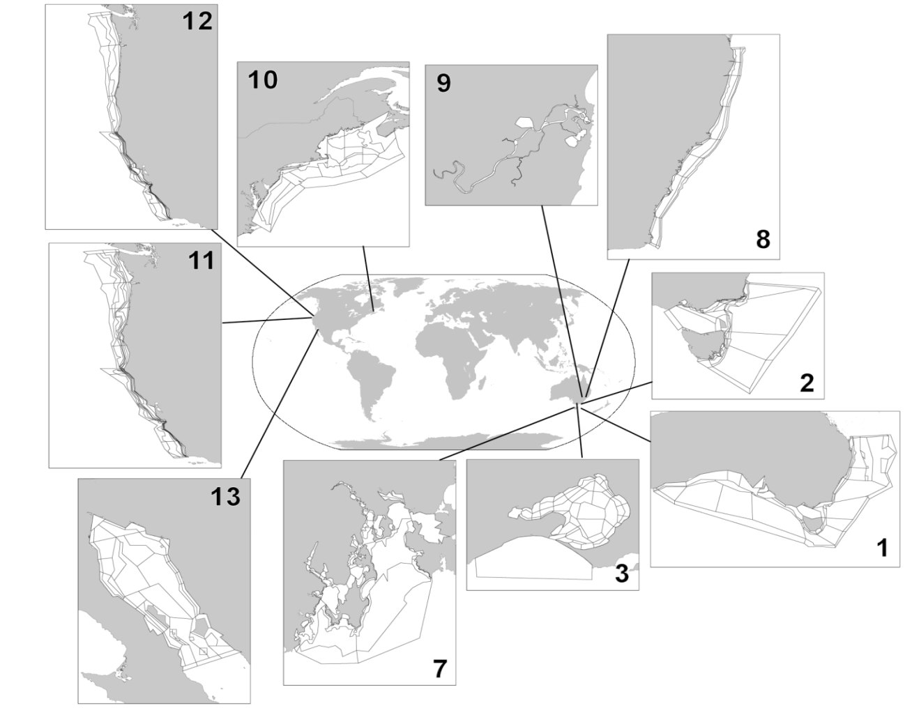

1. INTRODUCTION
1.1. Goals of this manual and where to go from here
Before launching into what Atlantis is and what it assumes it is important to explain what the intent of the manual is, how it can be used and the meaning of key terms that will be used throughout.
This manual is intended for Atlantis beginners who have some experience with modelling, running programs in command line (yes, this is how to run Atlantis!), and writing or using C or R scripts for analysing the outputs. While we have provided some information useful during model construction, this is not a comprehensive step-by-step recipe book on how to create a new model from scratch. We assume in many sections that you already have a somewhat operational Atlantis model that you want to use. The manual will also be useful for experienced users, because even experienced users often focus on the area of their interest and may not be thoroughly familiar with other aspects of the modelling tool. Finally, the manual will aim to provide starting points for developers of new Atlantis applications, but you will have to venture out and learn a lot more than what is covered in the manual.
As at the time of writing this manual (2016), two versions of Atlantis code are available for to the community1. The main version is called trunk, which is the usual way programmers refer to the main line of the code development. It was released in January 2015 and it includes all the latest developments and updates, and should be used for all new model applications. This manual, with some rare exceptions, will apply to the trunk version only. The old version bec_dev is no longer being actively extended and is intended for users who have been using Atlantis for a while and are unable to switch for whatever reason.
Atlantis is a rapidly developing tool. There are three main resources to keep up with updates:
1. The Atlantis Wiki is the first place to go for further information. Also remember to look at the page on Frequently Asked Questions for troubleshooting issues.
2. The Atlantis Google group is a good place to ask questions from the Atlantis user community and search topics of previous discussions.
3. The code itself! The code is commented and is the best way to understand how different processes are implemented. (We know that may sound confronting and challenging to those less used to code, but doing a word search on the code and looking at what it does is really how Beth and Bec go about answering any questions you ask them… even they don’t keep it all in their heads!)
For further information on model details and equations, see the Atlantis wiki page on useful reading.
Models Used as Basis for Physical and Biology Processes in Atlantis
Murray AG, Parslow JS (1999). The analysis of alternative formulations in a simple model of a coastal ecosystem. Ecological Modelling, 119, 149-166.
Murray AG, Parslow JS (1997). Port Phillip Bay Integrated Model: Final Report. Technical Report No.44, CSIRO Environmental Projects Office Canberra, ACT, Australia.
Ebenhöh W, Kohlmeier C, Radford P J (1995). The benthic biological submodel in the European regional seas ecosystem model. Netherlands Journal of Sea Research, 33, 423-452.
Publications Explaining Processes Used in Atlantis
Initially called IGBEM and BM2
⚠️ READING THESE TWO PUBLICATIONS IS ESSENTIAL FOR ANY ATLANTIS USER!
Fulton EA, Smith AD, Johnson CR (2004a). Biogeochemical marine ecosystem models I: IGBEM—a model of marine bay ecosystems. Ecological Modelling, 174, 267-307.
Fulton EA, Parslow JS, Smith AD, Johnson CR (2004b) Biogeochemical marine ecosystem models II: the effect of physiological detail on model performance. Ecological Modelling, 173, 371-406.
Other Atlantis Reports and Publications
Fulton EA (2001) The Effects of Model Structure and Complexity on the Behavior and Performance of Marine Ecosystem Models. PhD Dissertation University of Tasmania.
Fulton EA, Smith AD, Johnson CR (2003). Mortality and predation in ecosystem models: is it important how these are expressed? Ecological Modelling, 169, 157-178.
Fulton EA, Smith ADM, Smith DC (2007) Alternative management strategies for Southeast Australian Commonwealth fisheries. AFMA, FRDC.
Link JS, Gamble RJ, Fulton EA (2011) NEUS—Atlantis: construction, calibration, and application of an ecosystem model with ecological interactions, physiographic conditions and fleet behavior. US Dept. Comm. NOAA Technical Memorandum NMFS-NEFSC-218. 249pp.
1.2. Terms and conventions used in the manual
This manual is referenced throughout, and you can click on hyperlinks to take you to appropriate web pages or relevant parts of the manual.
Below are a few terms and standards.
Parameters and variables, used in various input and parameter files, are marked in orange.
Routine names are shown in italics(). In computer programming, routines and subroutines are nearly synonymous terms describing a sequence of code that is intended of to be called repeatedly during the execution of a program. A routine performs a specific task and is relatively independent of the remaining code (although it might use variables defined or calculated in other routines).
Routines are grouped into files, used to perform a larger function. For example, the atphysics.c file includes a number of routines performing physical processes (gas exchange, deposition, diffusion). The code files will be shown as bold . The files are then grouped into larger libraries, also shown in bold. Currently, Atlantis has 12 libraries, each containing dozens of files that, in turn, each contain several to dozens of routines.
Atlantis parameters can be grouped into flags and parameters (in narrow sense). Flags activate various optional routines; they are used in the if statements in the code (if flagA=1 do routine aaa). For further information about what flags do, check this link to flags in the biology parameter file on the Atlantis wiki. There are no clear rules on naming of parameters and flags, so the name alone does not indicate whether it is a parameter or flag.
Atlantis requires a lot of input files. Some of them are used for external forcing of the model (see Figure 2) and will be referred to as inputs. They are all listed in the force.prm file (note names of files used to run the model will be given simply in italics, to avoid confusing them with code files). Other input files define parameters or groups used in the submodels or simulation conditions and are referred to as parameter files. They are all listed in the BAT file used to initialise the runs.
Throughout the manual important messages and rules are placed in boxes that start with NOTE! Suggestions for good practice rules are given as Good practice tips. These tips give ideas on how to ensure reproducibility of your work and also highlight some common mistakes.
Most terms will be explained in the relevant sections of the manual. Here we will introduce only absolutely key ones.
Age groups defines age classes used in the model to represent fully age-structure groups (and can be set to anything from a few months to any number of calendar years). Many parameters for these groups are age-group-specific. All individuals in an age group are considered identical, unless the option of multiple genotypes is used, in which case all individuals within one genotype of one age group are identical.
Fisheries are fishing units that can have unique and very customisable characteristics, distinguishing them from other fishing units. The number and names of fisheries are given in the fisheries.csv parameter file. If fishing is simulated dynamically (see below) then fisheries behave more like separate fleets with dynamic characteristics.
1.3. What is Atlantis?
Atlantis is a whole-of-system 3D spatially-explicit marine ecosystem modelling framework based on complementary submodels used to simulate physical and biogeochemical processes, ecology, human uses of marine and coastal systems (primarily fisheries), and management. It is written in the C programming language and was originally based on two other models – the Port Phillip Bay Integrated Model (PPBIM) and the European Regional Seas Ecosystem Model (ERSEM). Atlantis combines different aspects of PPBIM and ERSEM (see Fulton et al. 2004a reference in the box above) and adds a lot of new specific features (Fulton et al. 2004b). Developed by CSIRO scientists in Australia, it has now been applied to more than 30 locations around the world (Fulton 2004; Fulton et al. 2011).
The model explicitly tracks the flow of nutrients through the trophic levels, typically using nitrogen as the “common currency” (carbon and phosphorous may also be used). At the core of Atlantis is a deterministic biophysical submodel that is spatially-resolved in three dimensions using a map made up of user defined boxes (polygons) and slab-like depth layers. The model geometry is flexible and should be matched to the major geographical and bioregional features of the simulated marine system. The oceanographic processes, such as water fluxes, salinity and temperature conditions are forced, typically based on outputs from oceanographic models (although they can be read in from observation data or calculated endogenously within Atlantis). Together with the optional forcing of nutrient inputs, these oceanographic processes drive deterministic primary production. The main ecological processes considered are production, consumption and predation, waste production and cycling, migration, reproduction and recruitment, habitat dependency and mortality. Biological functional groups include habitat-forming species like kelp, corals and sponges, as well as other benthic invertebrates, vertebrates, phytoplankton, zooplankton, refractory and labile detritus, and carrion. Predation is based on a prey availability matrix (similar in concept to the vulnerabilities used in the feeding arena theory, Walters and Kitchell 2001) with the final realised diet modified by the predators’ gape limitations and feeding rates, spatiotemporal co-occurrences, the state of habitat refugia (for habitat dependent species) and in some instances nutritional quality and spawning status. Lower trophic levels are treated as biomass pools, whereas some key invertebrates and all vertebrates are represented as age groups. All individuals within an age group are considered identical and their conditions are tracked through energy allocation to structural and reserve nitrogen. The biological components are replicated in each layer of each of the polygons. Movement of organisms between the polygons is simulated by advective transfer for plankton and optional active migration for macrofauna.
Atlantis is a strategic, exploratory tool for investigating ecological processes, management policies, and broad consequences of alternative scenarios. It is not intended to replace traditional tactical models, such as annually updated stock assessments used to set fisheries quotas.
Atlantis has very flexible Harvest and Economics submodels that allow the user to set a large number of alternative harvest scenarios. A limited set of simple representations of other marine sectors (shipping, aquaculture, tourism, mining, energy generation and coastal land uses) can also be used. Pollution, coastal development, run-off and broad-scale environmental change can also be represented using forcing time series. The human use and impacts submodels are optional, which means that simulations can be run without any explicit exploitation or human impact.
The Harvest submodel is mostly focused on the dynamics of fishing fleets. Either stand-alone, or in combination with the Economics submodel, the human dimensions can be customised to simulate exploitation regimes and potential management schemes. These can range from a simple constant fishing rate on a single functional group to complex, dynamic fisheries comprised of interacting fleets, each with its own gear, bycatch and management characteristics, exploratory fishing, and all affected by compliance decisions and economic issues, such as prices of fish quota trading. Alternatively, Atlantis can be coupled with specific stand-alone fleet dynamics models, such as random utility or agent-based models.
Exploration of management outcomes in Atlantis can be done in two ways. The first is a simple scenario projection, where constant management rules are retained unmodified through time. The second is the full management strategy evaluation mode, where the monitoring, assessment and decision making steps (and their feedback onto fishery regulations and behaviours) are represented. In the latter case, the Harvest submodel interacts with the ecosystem, but also supplies ‘simulated data’ to the Assessment submodel. The Assessment submodel is designed to simulate the assessment process with realistic levels of measurement uncertainty, in both measurement bias and variance. These ‘simulated data’ are derived from the outputs from the Biology and Harvest submodels, given a user-specified monitoring scheme that allows mimicking of a wide range of fisheries and survey information. The ‘data’ are then fed into an appropriate assessment model chosen by the user, such as Surplus Production, Adapt VPA or Bayesian integrated stock assessments. Additionally a range of ecological indicators can be calculated. The output of the Assessment submodel is fed to the Management submodel, designed as a set of decision rules and management levers that will affect fisheries. These include gear restrictions, days at sea, quotas, spatial and temporal zoning, discarding restrictions, size limits, bycatch mitigation, or dynamic reference points. It is also possible to track the approximate management costs, as monitoring and enforcement costs.
One of Atlantis’ defining characteristics is its modular construction. A wide range of alternative assumptions and model implementations are provided in each of the submodels. This allows the user to choose the desired complexity– from a relatively simple model of a few groups with simple trophic interactions and catch equations through to complex models, with complicated stock structure, multiple fleets, detailed economics and multiple management levers. However, this flexibility requires that users fully understand the processes and do not resort to ‘default settings’. Atlantis is not a model where you can simply sit and pull multiple handles to discern what it is doing. It requires digging deeply into its underlying processes, particularly when first building and calibrating a new application. It also means that building and parameterising a new and complex model will require a lot of time and data, and can also lead to large uncertainties around model outcomes.
1.4. Existing applications and questions studied
Most Atlantis development and applications have centred on evaluating alternative management strategies for multispecies fisheries, or exploratory analyses of multiple ecosystem pressures. To date, the Atlantis framework has been applied to over 30 ecosystems around the world (Fig. 1) primarily to study questions of:
1) overall assessment of alternative management strategies (Kaplan et al. 2012, Savina et al. 2013, Fulton et al. 2014)
2) historical impacts of harvesting (Link et al. 2010),
3) compliance with fishery regulations (Ainsworth et al. 2012a, 2012b),
4) robustness of ecological indicators (Fulton et al. 2005),
5) exploration of fisher behaviour (Kaplan et al. 2014),
6) impacts of global change, including acidification ( Kaplan et al. 2010; Griffith et al. 2011, 2012, Fulton and Gorton 2014; Weijerman et al. 2015),
7) effects of body size changes (Audzijonyte et al. 2013, 2014, 2015).
8) the implications of model complexity (Fulton et al. 2003, Fulton 2004)
More recently Atlantis has been used to consider the impacts of marine and coastal industries other than fishing.
 Figure 1. Some existing applications of Atlantis modelling framework and specific model domains (see Table 1 for details on numbered models).
Table 1. Examples of Atlantis model applications and their main purposes: P = primary use of the model, S = secondary use, E = exploratory use beginning (modified after Fulton et al. 2011). Some of the model descriptions are included in the useful reading page on the wiki. An updated list of models under development is also available on Atlantis webpage
| System | Complexity | Understanding | System-level MSE | Fisheries | Nutrients | Mining | Climate impacts | Catchments | Indicators | Management | Reference |
|---|---|---|---|---|---|---|---|---|---|---|---|
| Australia | |||||||||||
| 1. SE Australia | P | P | P | S | P | P | Fulton et al 2007 | ||||
| 2. Victoria/Tasmania | P | S | S | S | P | P | Smith et al. 2010 | ||||
| 3. Port Phillip Bay | P | S | S | P | Fulton et al 2004b | ||||||
| 4. Westernport | P | P | P | Savina et al 2005 | |||||||
| 5. E Tasmania | P | P | S | E | E | Johnson et al 2008 | |||||
| 6. Tasmania | P | P | S | - | |||||||
| 7. Derwent-Huon | P | E | E | E | E | E | E | Savina 2009 | |||
| 8. New South Wales | P | P | P | S | S | Savina et al 2008 | |||||
| 9. Clarence River | P | E | E | E | P | P | E | Hayes et al 2007 | |||
| North America | |||||||||||
| 10. NE USA | P | P | P | S | P | Link et al 2010 | |||||
| 11. California Current | P | P | P | S | S | P | Brand et al 2007 | ||||
| 12. Central California | P | S | P | Horne et al. 2010 | |||||||
| 13. Chesapeake Bay | P | P | P | S | P | Ihde et al. 2016 | |||||
| 14. Gulf of California | P | P | P | S | E | E | E | P | Ainsworth et al. 2012b | ||
| 15. Gulf of Mexico | P | P | P | S | S | P | Ainsworth et al. 2015 | ||||
| 16. Campeche Bay | P | P | P | P | Ortega-Ortiz and Ainsworth in prep. | ||||||
| 17. Desoto Bay | P | P | Gosnell S., unpubl. | ||||||||
| Other areas | |||||||||||
| 18. Guam | P | P | P | P | P | S | P | Weijerman et al 2015 |
The greatest challenge in implementing an Atlantis model is evaluating uncertainty of parameters and model forecasts. Traditional sensitivity analyses are not possible in models as complex as Atlantis, and therefore parameter uncertainty must be assessed in other ways. New means of achieving this are under development, but historically it has been done using ‘bounded parameterisation’, where extreme sets of parameters still giving realistic biomasses are used to explore sensitivity. For further discussion on evaluating uncertainty in Atlantis, see chapter 3.2 and 6.1 in Fulton et al. 2007. To read about uncertainty in ecosystem models in general see Link et al. 2012.
For this reason Atlantis is well suited for broader scale exploratory analyses, “what if” scenarios, general evaluation of management strategies and other questions that draw on its ability to simulate multiple interactions between environmental factors, different marine species and humans. It is important to note that predicted biomasses of some functional groups are not necessarily expected to match biomasses predicted from other kinds of models, such as stock assessments (although ideally the trends would match if the same fishing pressure is included in both models). In general Atlantis produces realistic ecosystem structure and function, with biomasses of the correct order of magnitude and plausible dynamics. However, the details can be uncertain and hard to predict with a great deal of precision. For this reason, Atlantis should not be used for tactical short term advice such as setting quotas. However, it could inform fisheries models on factors such as variable natural mortality, as long as the inherent uncertainties are well recognised. The strategic nature of Atlantis is described in detail in Fulton et al. (2011).
Atlantis is not a simple model to implement and even the simplest parameterisation will take many months to a year or more to implement and calibrate. Most models developed from scratch should be considered a close to full time effort for 1-2 years. Including an elaboration of the human dimensions can increase this by a further 6-12 months. Without this level of effort model development can drag on for many years. Once developed however individual simulations can be done quite quickly (on the order of hours to days) so that many questions can be addressed rapidly. The investment in individual models means that re-use of a model for multiple questions make sense, as the models often represent a synthesis of broad system understanding, but care must be taken to make sure this re-use is appropriate. Put thought into whether the model structure captures the correct features, whether the parametrisation decisions still hold. In short go through the model design steps as if you were starting a new and check that the existing model holds up against these needs – that it is a suitable model. For those who would like more guidance on the re-use of ecosystem models please refer to Essington and Plagányi (2013).
Table 2. Some example findings from Atlantis applications (modified after Fulton et al. 2011)
| Model | Findings |
|---|---|
| SE Australia (SE model) | • Human behavioural uncertainty produces unanticipated outcomes of management decisions and are important to future adaptive capacity • If companion TACs are implemented this leads to the ecological decline of weak stocks or significant economic costs (e.g. 75% of the catch foregone) • Relative biomass indicators, ratios of biomass (e.g. pelagic:demersal), size structure and size at maturity are consistently the most robust indicators of the effects of fishing (at fine or very large scales) • Decline in fish body size can greatly increase predation mortality through positive feedback loops in predator-prey age structure. This can prevent complete recovery from fishing, leading to a new and often lower equilibrium biomass • Small pelagic fish (like sardines) play a much less important role in temperate Australian ecosystems than in classical upwelling systems |
| Victoria/Tasmania (SM model) | • Relative biomass indicators are consistently the most robust indicators of the performance of spatial management (though their performance can be weak at regional scales due to noisy data resulting from overlapping process scales) • Universal fisheries reference points are unlikely to work • Some indicators are only effective at small or very large scales due to how species are aggregated and distributed • Monitoring design is critical for long-term interpretation of time series |
| Eastern Tasmania (SETas model) | • Off Tasmania there appears to be minor effects of fishing squids, but large impacts of targeting myctophids, suggesting a wasp waist system |
| New South Wales (NSW model) | • The size of no-take marine protected areas can be important for their ultimate success, but the redistribution of the catch and effort outside the closed areas is even more important • Not all species benefit from spatial management (e.g. prey species do not) • Moderate levels of fishing pressure can lead to an increase in biodiversity • The explicit representation of ontogeny can be important for correctly representing the dynamics of marine species that show large spatial or habitat shifts with age |
| NE United States (NEUS model) | • Despite their complexity, clear patterns are detectable in large complicated biophysical systems (making calibrated predictions feasible) • Modelling squid and shrimp is extremely difficult (a finding recurring in many ecosystem models), but should be attempted as it can lead to new system understanding • Modelling ecology is much simpler than modelling a coupled ecological-anthropogenic system • Well calibrated models have high model skill, but typically only for those system components informed by data |
| California Current (EMOCC model) | • Catch shares are more economically efficient, even if catch levels remain unchanged • Monitoring and enforcement is critically important for fisheries management and guidance of fleet behaviour • Ocean acidification is likely to lead to the reduction in biomass of predators dependent on shelled invertebrate prey; in contrast other species (e.g. jellyfish) are likely to increase in biomass • Ratios of functional group biomass (e.g. piscivore : planktivore) are strong indications of community restructuring under fishing |
| Central California (ECCAL model) | • Fleets are differentially effected by changes in management rules or environmental conditions (some suffer significant economic declines while others see substantial increases) • Shifting gears to minimise bycatch and habitat destruction does not restore age structures, but spatial closures can |
| Gulf of California (GOC model) | • Reported catch values are insufficient to cause observed declines in species biomasses (by 3-5 times for most species) |
1.5. How does Atlantis compare to other marine ecosystem models?
The key characteristics of Atlantis is that it is 1) whole-of-system, 2) spatially explicit, 3) age structured, 4) deterministic, and 5) comprised of submodels that simulate human impacts and management.
1) ‘Whole-of-system’ means that Atlantis aims to represent the entire ecosystem (even if greatly simplified) rather than focus on a few species of particular interest. It spans environmental drivers, habitats, the foodweb, and major human uses (fisheries in detail, but also simple representations of tourism, mining, energy generation, ports, shipping and the other coastal uses such as urban developments). Many other ‘whole-of-system’ or ‘end-to-end’ models are being developed but at present Atlantis tends to include more explicit oceanography and nutrient cycling than foodweb models such as Ecosim with Ecopath (EwE; Christensen and Walters 2004) and a more extensive foodweb than targeted system models like OSMOSE (Shin and Cury 2004).
2) Atlantis is spatially explicit, which makes it a useful tool to explore spatial dynamics of various ecological and socio-economic processes (assuming you can parameterise them). In this way the model is similar to Ecospace (Walters et al. 1999), OSMOSE , SEAPODYM (Lehodey et al. 2008), and other models that operate on an oceanographic domain (Fiechter et al. 2014).
3) Atlantis includes two means of representing species – biomass pools (similar to those in EwE, these pools can include a small number of life-stage stanzas) and fully age-structured, where the average size-at-age of a typical individual is tracked along with the membership of that age group. Typically, biomass pools are used for invertebrate groups and age-structured for vertebrates, but that is not a strict requirement. The representation used for a species is dictated by the modeller in the .csv file used to define the configuration of the model groups. The realised growth and size of species represented through age-structured groups is dynamically dependent on food intake, whereas feeding interactions and reproductive output depends on the realised size and condition. This flexible age-size relationship adds temporal variation in size-at-age, essential for capturing important ecosystem dynamics and useful for exploring the ecological and fisheries consequences of changes in individual size and life-histories (Audzijonyte et al. 2013, 2014). The combination of spatial structure and temporal age-size dynamics means that Atlantis can produce realistic ecosystem dynamics both temporally and spatially and a lot of attention has been given to developing the models ability to capture age-size dependencies, temporal, habitat and spatial variation (Fulton et al., 2004c). The Atlantis users are therefore encouraged to make full use of these aspects. Alternatively, if the spatial and temporal age dynamics is not important, it might be better to consider using simpler and most likely computationally faster models.
4) In its standard form, Atlantis is not an agent-based (individual-based) model, like OSMOSE or InVitro (Gray et al 2006)2. It simulates temporally dynamic size-age relationship, but at a given time all individuals in an age group in one cell are identical (variation between cells is possible if a species is sedentary). Thus, Atlantis models processes based on representative “average” individuals for an age group, not true (separate and unique) individuals. This makes Atlantis computationally faster, but it does not simulate inter-individual variation and any potential emergent system properties.
5) Atlantis does not simulate stochastic environmental and ecological processes. Although Atlantis can include a small amount of recruitment timing variation, it is generally a deterministic model. This makes Atlantis different from models such as OSMOSE where stochastic processes are an integral part of the model formulation.
6) Atlantis was the first ecosystem model to include management strategy evaluation options - i.e. the inclusion of each part of the adaptive management cycle – the biological world, the human uses (especially fisheries), monitoring and reporting, assessment and management. EwE and OSMOSE now also include an MSE capacity. New features of human impact are constantly being added to Atlantis and the existing set-up is very flexible to customisation. Fisheries are represented in the most detail, but human impacts can also include nutrient and pollutant inputs, tourism, ports, shipping, urban areas, energy generation, heavy industry, mining and other marine and coastal industries.
1.6. Main assumptions
Like any model, Atlantis has a lot of assumptions and it is important to keep them in mind when using the model and interpreting its outputs. The key ecological assumptions are listed here (as all models, regardless of the level of human representation, contain these assumptions) and these and any other assumptions will also be listed in the description of different submodels and processes – in particular refer to section 14 for an extended list of ecological assumptions in tabular form.
1. While not an ecological assumption the first and foremost assumption of Atlantis is that box 0 is a boundary box and box 1 is a dynamic box. If this assumption is violated things will go terribly wrong (most likely you model will not run at all).
2. Atlantis is a deterministic model, which means that a specific combination of parameters and initial conditions will produce the same results (except for possible very minor differences due to the way computers round small numbers).
3. State variables, such as salinity, oxygen, nutrients, sediments, organisms – are tracked as passively or actively advected or moving tracers. Passive tracers are distributed by water flows, whereas actively moving tracers (mostly benthic invertebrates and vertebrates) can have different types of movement (density-dependent, seasonal migrations, sedentary).
4. Each cell of the model (one depth layer of one spatial box) is considered uniform in its environmental variables and hydrodynamic processes. The conditions of these variables can change at each time step (usually every 12h) depending on the water fluxes between cells. Epibenthic cells can include different habitats, modelled as a proportion of the whole cell. This proportion is treated abstractly (via statistical means) and is not given a specific geographic location within the cell. The availability of habitat refugia can scale ecological and fisheries processes, such as predation intensity or vulnerability to capture.
5. Predation is determined by the user defined predator-prey interaction matrix that sets a maximum availability of each prey biomass available to a specific predator. The realised consumption is then modified by the actual spatial overlap, biomass of the prey, habitat refuge for the prey, gape limitation of the predator, spawning time of the predator, possible effect of acidification or contaminants on the predator, and availability of fisheries discards as food. The realised consumption therefore can be very different from what is set in the predator-prey matrix. However, if the predator-prey matrix does not allow a specific interaction (the value is set to 0), predation will never occur.
6. Within a layer of a single box, all individuals within an age group or within a single genotype of an age group (if several genotypes per age group are used) of a fully age-structured group are identical. Condition of these cohorts may vary among cells depending on the local food availability and parameterisation used. Fully age-structured groups are typically used to represent vertebrates.
7. Biomass pool groups are represented as a single pool per model cell (one layer of one box). Age structured biomass pool representations can be used (where a separate biomass pool use used per life history stage for the group). Invertebrates are often represented using biomass pools.
8. Energy flow through the system is primarily tracked using nitrogen as a “currency”. The initial source of nitrogen in the system and each trophic group is set in the initial conditions file. Throughout a simulation nitrogen can be added into the system through optional forced inputs (e.g. river inputs) and atmospheric deposition. Nitrogen is lost through optional burial in the sediments (“decay”), denitrification, loss to the atmosphere (outgassing) and any optional forced sinks. The energy flow through diatoms or other user defined Si limited functional groups is tracked through both N and Si. It is possible to setup the energy flows to be tracked through nitrogen, carbon and phosphorus, but that requires significant additional input file preparation and computing resources, and is recommended only in systems where P limitation is essential.
8. Energy allocation in vertebrates is tracked as structural and reserve nitrogen. Structural nitrogen represents bones, scales, and other hard parts that cannot be reabsorbed if feeding conditions are poor. Reserve nitrogen represents muscle, gonad, and other soft structures that may be used as an energy reserve if conditions are poor. Structural nitrogen cannot decrease throughout an individual’s life-time (an individual cannot get smaller). Reserve nitrogen is used during reproduction or starvation and its ratio to structural nitrogen can change through time.
9. Maintenance energy costs are assumed to be covered through assimilation efficiency and optional total-weight specific respiration. However, most currently developed Atlantis applications do not include the optional respiration. Energy loss from reproduction is subtracted from spawn production as a functional group specific constant. There is no explicit inclusion of movement costs, although the time taken to move between cells is explicitly accounted for.
10. The earliest, larval life stages are not modelled explicitly. The recruitment type is defined by the user and occurs at a set time after spawning.
Footnotes
There is also Beth’s development version, that contains features being actively developed at any instant in time. As those features are tested and verified (and so are less likely to contain a bug that will blow up) they are moved to the trunk version for general access.↩︎
An agent-based extension exists for Atlantis, but it is not currently included in the standard Atlantis package and will not be discussed in the manual.↩︎